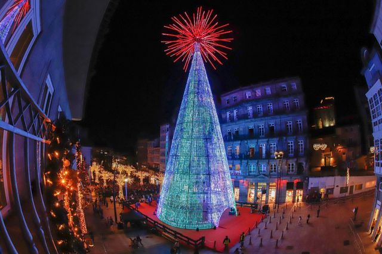
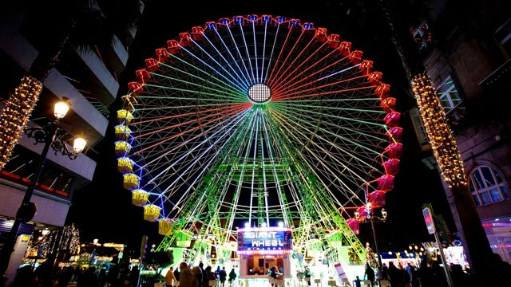

El árbol y la noria no son marcadores: son piezas del mapa. Aquí van a escala real, sobre el mapa de verdad, con los tres tratamientos posibles para decidir uno. Mismo encuadre en los tres.


Lectura: a 64 y 85 px el detalle de la foto se pierde y ensucia el mapa, mientras que el dibujo por código mantiene la silueta legible a tamaño de punto. El híbrido gana en noche y pierde en día. Ninguna de las tres lleva borde rectangular: el recorte y la sombra de contacto son lo que las pega al suelo.